Group Analysis
A classical example for group analysis might be that your data is divided into three samples: control, treatment1 and treatment2. This group analysis permits to analyse cluster membership for each group and the speed and directionality of shape changes for each group.
Run 5-Extended_Affinity_Propagation > Run_GroupAnalysis.m
Please select the Analysis folder and the ideal number of clusters as determined in Step 3a.
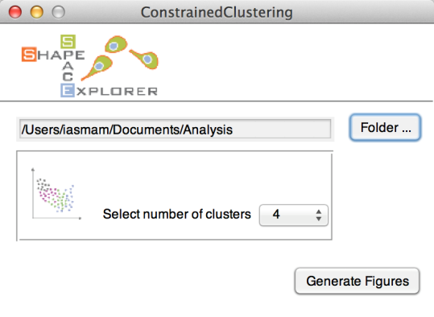
Define the Groups by entering a group name and the stack number. A mapping between stack number and original file is in ‘FileMapping.csv’, generated in the cell segmentation step.
Note: Avoid special characters and white space for group names as they are used later directly in figure paths, and may cause issues on some operating systems.
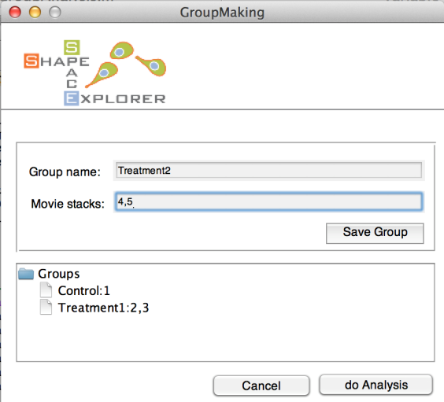
Note: stack numbers from one to five can be entered in several ways, such as
- 1-5
- 1,2,3,4,5 To delete a group, hold CTRL and click on the group, which produces a context menu with a delete option.
For each group analysis, the program creates a new folder with time stamp, for example “GroupAnalysis_2015-04-15_095836”. The folder contains the following results for each group:
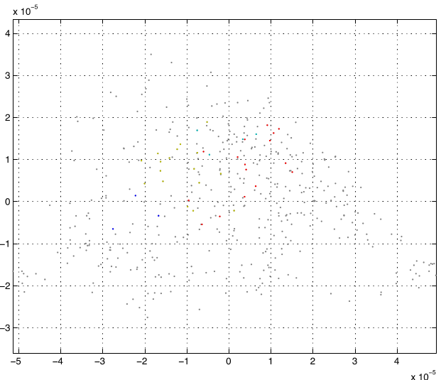
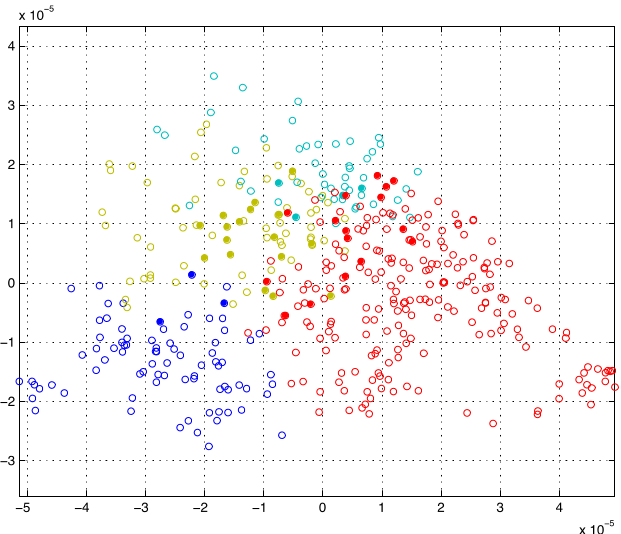
Left images shows shape space in gray, with group elements in cluster colour, while right image shows group elemetns as full circles and non-group elements as empty circles in shape space.
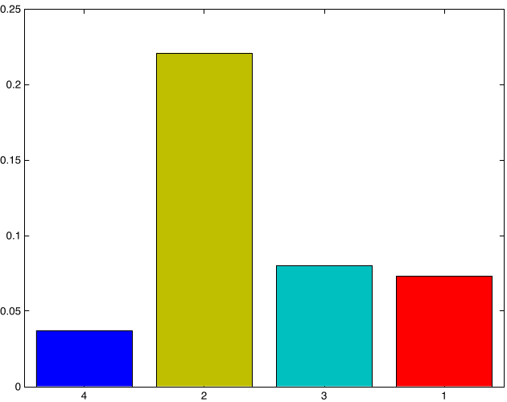
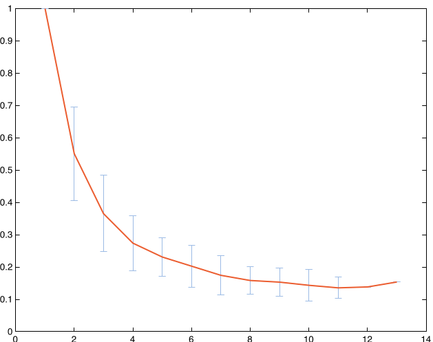
Left figure shows the relative amount of shapes in the clusters, while right figure shows Eucledian ratio persistency of the group, a ratio between accumulated distance and shortest possible distance over different time lags.
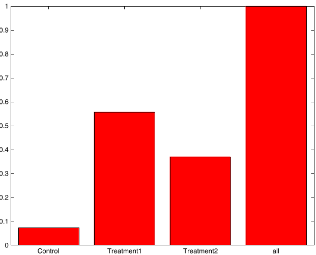
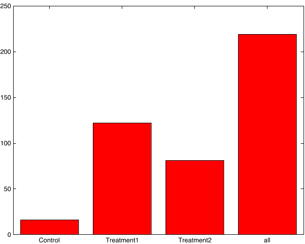
Left figure shows relative count of all groups with respect to cluster 1 (red), while right figure shows bar plots with absolute counts. For all bar plots, the numbers are written in text format in the Group Analysis folder.
Finally, the averages speed in shape space is written in “AvgSpeedPerGroup.csv”. The unit of the speed is [unit in shape space/ time point difference]. If your movies took a frame every 5 minutes, than the respective unit would be [1 unit in shape space/ 5 minutes]. 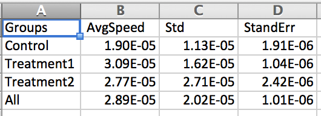
Shape Slicer
To run the shape slicer, go to folder 4-Shape_Averaging and run “Run_SpaceSlicer.m”, which opens a configuration window (see below).
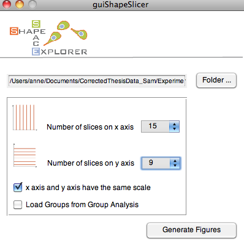
Select the Analysis folder and the number of slices the x and y axis should be divided into. The program produces the figure below.
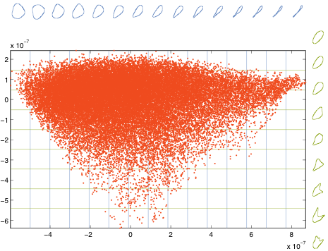
Each dot corresponds to a shape in shape space. Here, the x-axis is sliced into 15 sections. For each section, the program produces an average shape (see blue shapes). Similarly, the y-axis is sliced into 9 sections, and the respective average shape is plotted in green.
To make the results graphically more appealing, the program writes the single items, such as contents and average shapes of x- and y-axis into single figures, permitting to edit the elements in graphic programs able to deal with EPS file format.
Shape Slicer with Group Analysis
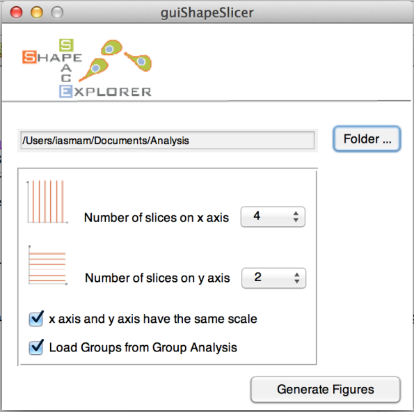
To see the group distribution in space slicer, tick the last choice box (load group analysis). Then, the program ask for a group folder (see below)
select_folder
Below is the shape space sliced, with the coloring of the group analysis and the associated histograms for the defined groups.
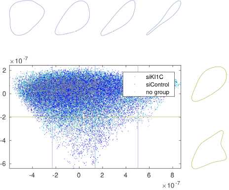
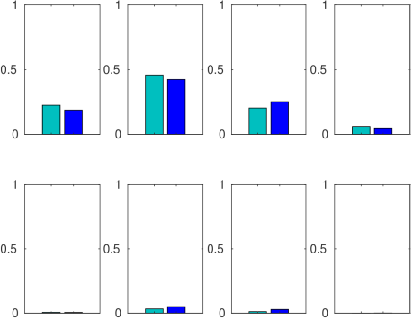